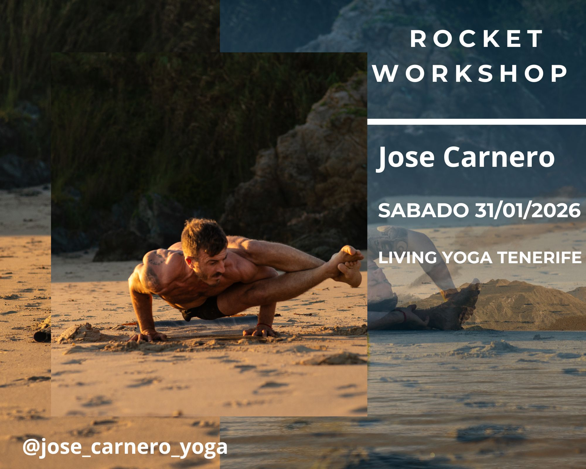

nuevo · enero 2026
Rocket Yoga Workshop
Living Yoga Tenerife · Sábado 31 de Enero de 2026

Sobre el workshop
Impartido por Jose Carnero, certificado Nivel 2 de Rocket, profesor de Ashtanga y Rocket.
Veremos las secuencias de Rocket 1 y Rocket 2 junto con dos talleres de invertidas y extensiones de columna. Serán prácticas y talleres asequibles para todos los niveles de práctica.
Rocket 1 se centra en flexiones hacia adelante, trabajo de fuerza de piernas, aperturas de cadera y alguna invertida.
Rocket 2 pone el foco principalmente en extensiones de columna, con aperturas de cadera más profundas y más balances de brazos.
El Rocket Yoga
El Rocket Yoga es una práctica dinámica y liberadora creada por Larry Schultz, discípulo de Pattabhi Jois. Nace de la estructura del Ashtanga, pero propone una aproximación más creativa, accesible y desafiante a la vez.
A través de secuencias fluidas y energizantes, el Rocket trabaja la fuerza, la flexibilidad y la conciencia corporal, invitando al practicante a explorar sus límites con ligereza y sin rigidez.
Cada práctica es una oportunidad para romper patrones, soltar el control y cultivar la confianza, conectando la disciplina del Ashtanga con la libertad del movimiento consciente.
En mis clases, busco transmitir la esencia del Rocket como un espacio de CRECIMIENTO y CONSCIENCIA CORPORAL, donde la respiración guía, el cuerpo se expresa y la mente se aquieta.
Agenda
Mañana · 09:30 - 13:30
- 09:30 - 11:00 Rocket 1 multinivel
- BREAK
- 11:30 - 13:30 Taller de Invertidas
Tarde · 16:00 - 20:00
- 16:00 - 17:00 Short Rocket 2 multinivel
- BREAK
- 17:30 - 20:00 Taller Biomecánica Backbends
Talleres
Invertidas
Veremos formas de trabajar y entender los diferentes tipos de posturas invertidas que se hacen en Rocket. Desde la biomecánica y las activaciones necesarias hasta drills para ganar la fuerza y movilidad necesaria.
Backbends
Las extensiones de columna son el gran reto por la antinaturalidad de la postura. Trataremos de entender, desde el enfoque biomecánico, todas las partes implicadas y cómo conseguir ganar espacio y liberar la columna para acceder a ellas de forma sana y segura.
Información y reservas
Living Yoga Tenerife
C/ Puerto Escondido n 3 1C
Santa Cruz de Tenerife
@living_yoga_tenerife · 651 555 615
@jose_carnero_yoga · 637 312 106